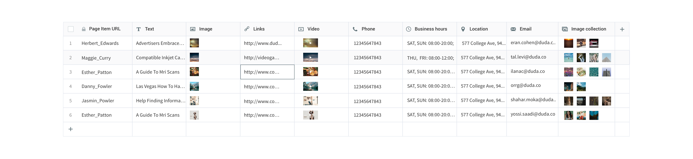

-
Background
-
Duda is a web building platform for design agencies and hosting companies. After Dynamic Pages with external collections was released, a lot of users didn't want to store their data in external platforms. They were looking for a place/database to store their data instead of having to manage it someplace else. Some users didn’t want to have to leave the platform to manage their data.
-
Roles and Responsibilities
-
My role in this project was both product manager and product designer. Our team included a backend developer, fullstack and client, as well as QA and automation.
-
Target Audience
-
Our target audience was customers who build advanced and page-heavy sites, but want to manage them as part of the site itself, without having to leave the editor. These are usually customers who are less tech savvy and want to allow their clients to update and manage their data. They are looking for a one stop solution, instead of having to add external integrations to their sites. The target audience in this project was broader. It’s good for any user who’s looking This is relevant to more users as it's simple and doesn't require extra integrations. This is good for any user who needs to manage their data and display it on the site, specifically structured data. Site that have a need for dynamic pages.
-
High Level Goals
-
- Simplify the complex external collection - Make Dynamic pages more accessible to customers - Create a familiar collections experience
-
The Solution
-
Built-in collection interface inside Duda's editor, used to display data on the site using Connected Data or Dynamic Pages. Allow creating a database within the site, and display its content on the site. Internal collections allows users to be more organised - they know each site has its own database, and they don't have to remember which sheet is connected to which website of which client. They can use more capabilities with internal collections and it looks familiar to the rest of the editor, meaning less advanced users would be able to use it. It allows us to better integrate this within the product. Users do not need to leave the platform to manage their data. Create GIF?

-
02
The Process